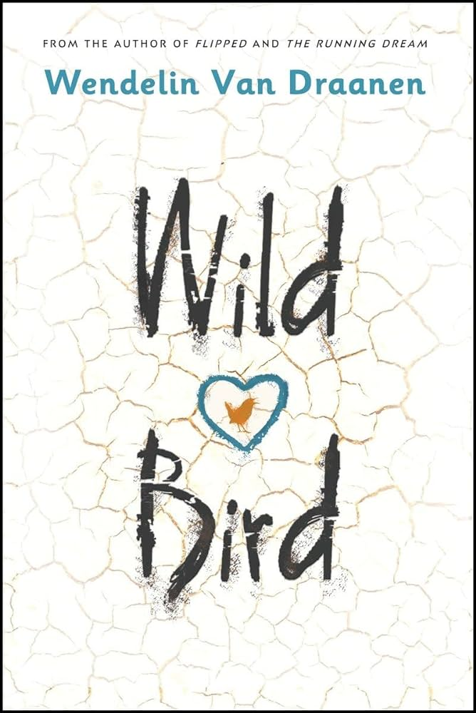

Wild Bird
- Wild Bird
- Wendelin Van Draanen
- Realistic Fiction
- 4.5 Stars / 5
Of the few books I have read this year, Wild Bird is my favorite. It is a fictional story of a middle school girl, Wren, who gets a drug addiction and hides everything from her family. She goes through several therapists and doesn't get better. After a particularly destructive outburst, her family as a last resort sends her to a camp in the desert.
Then in a harsh desert she is surrounded by people, but none of them are able to help as Wren slowly comes to terms with where she is, and becomes capable of starting fires, getting water, and cooking food. Then Wren remembers that she still has 7 weeks left trapped with her emotions.
This is a brief description of the exposition of the book free bird, before any "real" spoilers. I would recommend this novel to anyone still in school. The book is a great reminder that everyone is struggling with something, and the only difference you will see is, how much they show it.